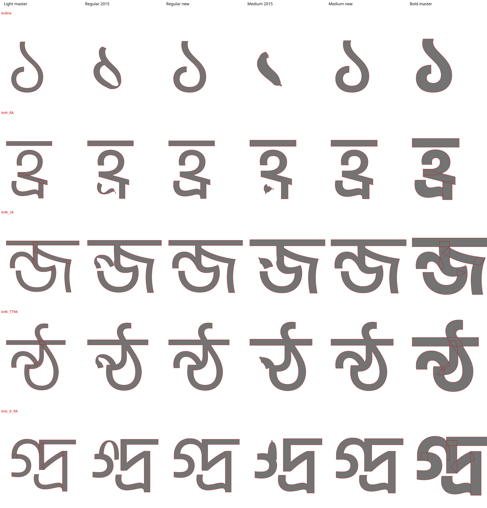
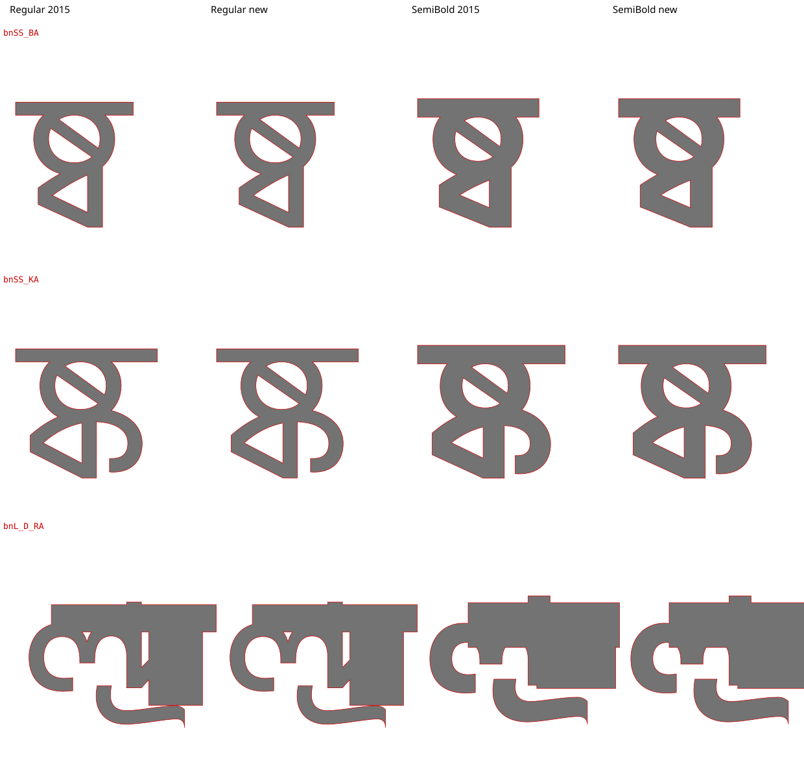

Hind Siliguri: the ১ digit
Google Fonts 1.001 (the 2015 OTFs converted to TrueType) next to this build, 1.002 from masters/HindiSiliguri.glyphs with hindkit and AFDKO 5.
The digit ১ (bnOne) is malformed in Regular, Medium, and SemiBold (google/fonts#6037, itfoundry/hind-siliguri#9). Contour direction is not the cause. The Light and Bold masters start that contour at different nodes: Light at the top of the stem, Bold at the tip of the curl. Interpolation pairs the wrong nodes, and halfway between the masters the tail swings through the stem. Four conjuncts have the same fault: হ্র, ন্জ, ন্ঠ, and গ্দ্র. This build rotates the Bold contours to match Light. The masters draw exactly as before.
Contour direction is fixed after overlap removal, as the 2014 tools did. Done before it, the step reversed the ষ diagonal in 18 ষ conjuncts.
Digits ০–৯
The four conjuncts with the same fault, and the ষ conjuncts
Text
Outlines
The five glyphs whose masters started at different nodes: Light master, 2015 and this build in Regular and Medium, Bold master. The 2015 columns are what Google Fonts serves.

The ষ conjuncts and ল্দ্র stay as they were in 2015. They broke only when contour direction was corrected before overlap removal.
